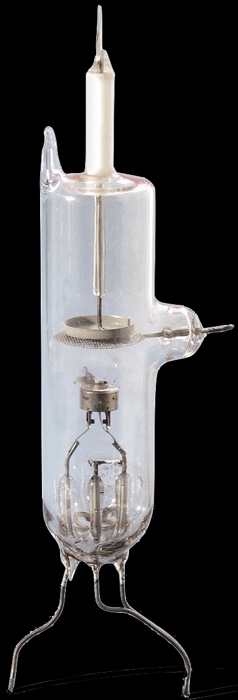
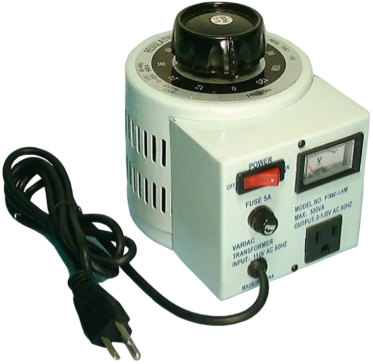
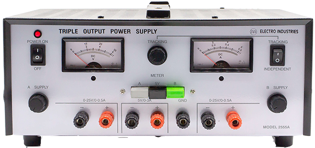
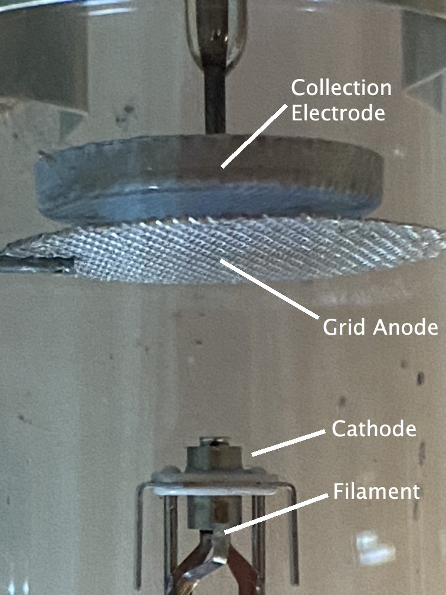

Franck-Hertz Tube

Variac

Keithly Model 6514 Electrometer

Electro Industries Trile Output Power Supply

Franck-Hertz Tube

Variac
Keithly Model 6514 Electrometer

Electro Industries Trile Output Power Supply
The Variac provides power to the oven, which heats the Franck-Hertz tube and vaporizes the mercury (Hg) it contains. The temperature in the oven thereby controls the density of Hg atoms between the cathode and the anode, which in turn affects the probability that emitted electrons collide with Hg atoms.
This is a live, infra-red view of the tube in the apparatus. We can put text here about the elements of the tube, and maybe a schematic, but I don’t think any of the tools should be operational in this view... Not sure if that logic is going to be difficult to encode

The filament releases electrons when heated (ie, it undergoes thermionic emmsion). The filament is heated by passing a current through it. The tools below allow you to control the voltage source that drives current through the filament.
Choose a step size, then click the arrows to turn the knob and adjust the voltage that drives current through the filament, heating it up
A potential difference between the wire mesh anode and the collection electrode can be adjusted to ensure that only the most energetic electrons arrive at the collection electrode and therefore contribute to the measured current.
Choose a step size, then click the arrows to turn the knob and adjust the retarding voltage.
A potential difference accelerates electrons that are emitted from the filament cathode toward the wire mesh anode. The power supply that provides for this potential difference is not connected to ground.
Click the switch to turn the accelerating voltage power supply on and off.
Choose a step size, then click the arrows to turn the knob and adjust the accelerating voltage.
The electrometer measures the photocurrent (i.e., the current that flows from the cathode to the anode when light hits the cathode). It is an especially sophisticated instrument that can reliably detect fractions of a picoamp. (1 pA = 10-12 A)
Click any button in the image above to press it on the device.